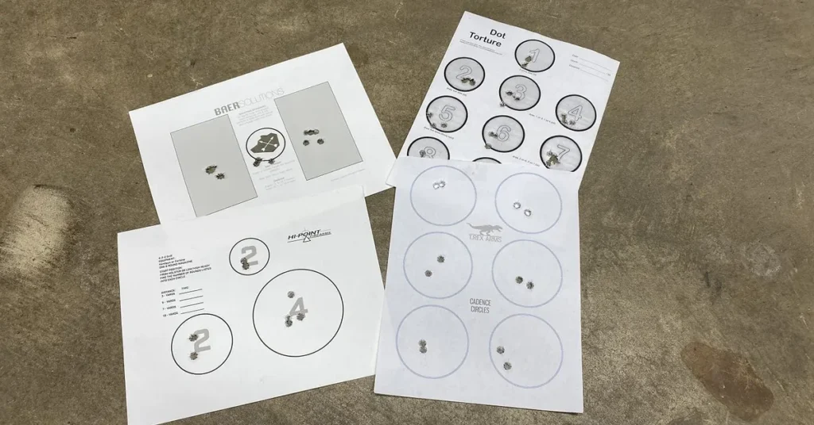

Dzień treningowy Pistolet 150szt. Pistolet albo karabinek.
2025-10-22
BAER SOLUTIONS TRENING STRZELECKI NA 150szt. AMUNICJI CEL „DANNY”
Cel ten został zaprojektowany na 150szt amunicji do pistoletu, ale po pewnych modyfikacjach można go również stosować do karabinka. Cel ten i cały drill jest dobrym sposobem na zapełnienie sobie całego dnia treningowego.
Cel 1:
Trening
skupia się na pracy na przyrządach optycznych oraz pracy na spuście – spokojne celowanie z
poprawną prezencją broni, dobycie z kabury, przeładowanie, opanowaniem odrzutu, żeby strzały
były możliwie najbardziej powtarzalne.
- cztery małe cele z czarnymi kwadratami (opisane) 5szt. amunicji do każdego zgodnie z opisem. tempo spokojne, wolne.
- dwa białe kwadraty po 5szt ammo do każdego opis niżej
- ostanie na tej stronie duże koło, 10 strzałów jedna seria , przyśpieszenie od wolnego do szybkiego strzelania.
- ten sam cel 10 strzałów, strzał wymiana magazynka strzał
Wszystkie
ćwiczenia (poza pierwszym i drugim) zaczynasz z kabury.
Pierwsze ćwiczenie: kontrola chwytu,
praca na spuście – spokojnie, skupienie.
Drugie ćwiczenie – pozycja high ready: celowanie,
płynne strzały.
Trzecie ćwiczenie: startujesz z kabury, dobycie ,zaczynasz powoli i
przyśpieszasz. Czwarte ćwiczenie – strzał wymiana maga strzał.
Zawsze kontrola celu , kontrola broni, kontrola otoczenia więc wszystkie nawyki utrwalasz i przenosisz dalej.
Cel 2:
- na tarczy opisany jako 5. duży cel nr. 1 strzelanie w tempie od wolno do szybko 5 strzałów powtórzone 5 razy zgodnie z opisem na tarczy
- ćwiczenie 6. różne cele po dwa strzały do każdego celu w kolejności cel 1 , cel 2, cel 1, cel 3, cel 1, cel 4
Tutaj wjeżdża
wyższa szkoła jazdy – ćwiczysz rytm, opanowanie powrót na cel, pracę na spuście.
Ćwiczenie 5
– strzelanie w rytmie. Rytm wyznacza komenda (może być: „raz”, „dwa” czy 121, 122 itd. – na
głos). Za każdym razem powtarzasz celowanie, resetujesz spust, skupiasz się na szybkim powrocie
na cel. Strzelasz zgodnie z rozpiską na tarczy. (tempo)
Ćwiczenie 6 – kontrola paru celów:
zakładasz, że cel 1 jest blisko, reszta dalej – strzelasz powtarzalnie, dobierasz tempo na każdy
cel według wielkości (większy – szybszy strzał, mniejsze – zwalniasz tempo) rozpiska kolejności
jest na tarczy i w opisie wyżej.

W przypadku karabinka można zmodyfikować ćwiczenie pierwsze dla strzelania z dominującej i niedominującej postawy, przechodząc między punktami na każdym ramieniu. Przy karabinku zwiększamy odległość.
Ćwiczenia, które przedstawiłem, są wskazówkami, więc możesz z nich korzystać w zależności od potrzeb, aby osiągnąć swoje cele treningowe. Można to dowolnie mieszać.
W związku z porozumieniem z BAER Solutions możemy legalnie używać ich tarcz i schematów ćwiczeń. Dzięki Norek 🙂
tyle
KuDłacz